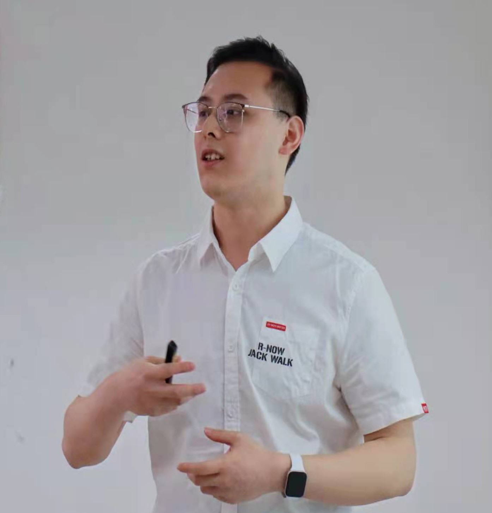
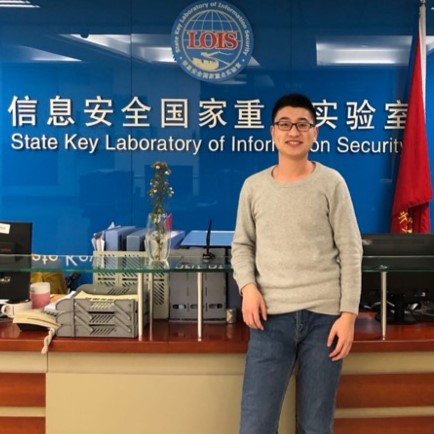

Faculties
-

Kai Chen
Professor, Institute of Information Engineering, Chinese Academy of Sciences
Professor Kai Chen received his Ph.D. degree in the University of Chinese Academy of Science in 2010; then he joined the Chinese Academy of Science in January 2010. He became the Associate Professor in September 2012 and became the full Professor in October 2015. His research interests include software analysis and testing; smartphones and privacy.
-
Guozhu Meng
Associate Professor, Institute of Information Engineering, Chinese Academy of Sciences
Professor Guozhu Meng received his Ph.D. degree in the Nanyang Technological University, Singapore in 2017, then he joined the Chinese Academy of Science as an Associate Professor. His research interests include mobile security, big data analysis, and machine learning.
-

Yi Yang
Research Assistant, Institute of Information Engineering, Chinese Academy of Sciences
Yi Yang graduated from the University of Leeds with Master’s degree in 2017. Her research interests include network security and machine learning.
Graduate Students
Ph.D. Students
-

Yi Chen (Co-advised Ph.D.)
Institute of Information Engineering, Chinese Academy of Sciences
Yi Chen is a Ph.D. student in Insititute of Information Engineering, Chinese Academy of Sciences from 2016. She is interested in mobile security.
-
Xuejing Yuan
Institute of Information Engineering, Chinese Academy of Sciences
Xuejing Yuan is a Ph.D. student in Insititute of Information Engineering, Chinese Academy of Sciences from 2016. Her research interest is mobile security.
-
Peiyuan Zong
Institute of Information Engineering, Chinese Academy of Sciences
Peiyuan Zong now is a Ph.D. student at Institute of Information Engineering, Chinese Academy of Sciences from 2017. Her research interests include Underground Market, Privacy & Security, Network Attacking & Defense.
-
Ruigang Liang
Institute of Information Engineering, Chinese Academy of Sciences
Ruigang Liang is a Ph.D. student at Institute of Information Engineering, Chinese Academy of Sciences from 2017. His research interests include software security,mobile security and applied cryptography.
-
Yue Zhao
Institute of Information Engineering, Chinese Academy of Sciences
Yue Zhao is a Ph.D.student in Institute of Information Engineering, Chinese Academy of Sciences from 2017. Her research interest is network security.
-
Yingzhe He
Institute of Information Engineering, Chinese Academy of Sciences
Yingzhe He is a Ph.D. student at Institute of Information Engineering, Chinese Academy of Sciences from 2017. His research interests include network security, mobile security and data security.
-
Dawei Wang
Institute of Information Engineering, Chinese Academy of Sciences
Dawei Wang is a Ph.D. student in Institute of Information Engineering, Chinese Academy of Sciences from 2017. His research interests is software security.
-
Weihao Huang
Institute of Information Engineering, Chinese Academy of Sciences
Weihao Huang is a Ph.D. student in Insititute of Information Engineering, Chinese Academy of Sciences from 2018. His research interests include data security, mobile security and network security.
-

Qintao Shen
Institute of Information Engineering, Chinese Academy of Sciences
Qintao Shen is a Ph.D. student in Insititute of Information Engineering, Chinese Academy of Sciences from 2018. His research interest is system security.
-

Dandan Xu
Institute of Information Engineering, Chinese Academy of Sciences
Dandan Xu is a Ph.D. student in Insititute of Information Engineering, Chinese Academy of Sciences from 2018. Her research interests include vulnerability detection and software security.
-
Zizhuang Deng
Institute of Information Engineering, Chinese Academy of Sciences
Zizhuang Deng is a Ph.D. student in Insititute of Information Engineering, Chinese Academy of Sciences from 2018. His research interests include software security, mobile security.
-
Ying Cao
Institute of Information Engineering, Chinese Academy of Sciences
Ying Cao is a Ph.D. student in Insititute of Information Engineering, Chinese Academy of Sciences from 2018. Her research interests include vulnerability detection and software security.
-

Hong Zhu
Institute of Information Engineering, Chinese Academy of Sciences
Hong Zhu is a Ph.D. student in Insititute of Information Engineering, Chinese Academy of Sciences from 2018. His research interests include software security and network security.
-

Zhixiu Guo
Institute of Information Engineering, Chinese Academy of Sciences
Zhixiu Guo is a Ph.D. student in Institute of Information Engineering, Chinese Academy of Sciences from 2019. Her research interests include network security, mobile security and data security.
-

Jinwen He
Institute of Information Engineering, Chinese Academy of Sciences
Jinwen He is a Ph.D. student in Institute of Information Engineering, Chinese Academy of Sciences from 2019. Her research interests include artificial intelligent security and software security.
-

Zijin Lin
Institute of Information Engineering, Chinese Academy of Sciences
ZiJin Lin is a Ph.D. student in Insititute of Information Engineering, Chinese Academy of Sciences from 2019. His research interests include software security and privacy protection.
Master Students
-

Yingkun Wang
Institute of Information Engineering, Chinese Academy of Sciences
Yingkun Wang is a master student at Institute of Information Engineering, Chinese Academy of Sciences from 2017. His research interests include software security, mobile security and data security.
-
Tao Lv
Institute of Information Engineering, Chinese Academy of Sciences
Tao Lv is a master student at Institute of Information Engineering, Chinese Academy of Sciences from 2018. His research interests include vulnerability discovery and malware analysis.
-

Jiutian Zeng
Institute of Information Engineering, Chinese Academy of Sciences
Jiutian Zeng is a master student at Institute of Information Engineering, Chinese Academy of Sciences from 2018. His research interests include software security and machine learning.
-

Yaosong Lu
Institute of Information Engineering, Chinese Academy of Sciences
Yaosong Lu is a master student at Institute of Information Engineering, Chinese Academy of Sciences from 2018. His research interest is mobile security, reverse engineering and malware analysis.
-
Yuhang Zhao
Institute of Information Engineering, Chinese Academy of Sciences
Yuhang Zhao is a master student at Institute of Information Engineering, Chinese Academy of Sciences from 2018. Her research interests include software security and network security.
-

Jiangshan Zhang
Institute of Information Engineering, Chinese Academy of Sciences
Jiangshan Zhang is a master student at Institute of Information Engineering, Chinese Academy of Sciences from 2019. His research interests include malware analysis and artificial intelligence security.
-

Chaoyang Lin
Institute of Information Engineering, Chinese Academy of Sciences
Chaoyang is a master student at Institute of Information Engineering, Chinese Academy of Sciences from 2019. His research interest include mobile security and system security.
-
Ruishi Li
Institute of Information Engineering, Chinese Academy of Sciences
Ruishi Li is a master student at Institute of Information Engineering, Chinese Academy of Sciences from 2019. Her research interests include system security, software security and machine learning.
Internship
-
Penghui Li
School of Computer Science in University of Chinese Academy of Sciences
Penghui Li is now a senior undergraduate student at University of Chinese Academy of Sciences, majoring in Computer Science. His research interests generally focus on Computer System and Security related problems.
Alumni
-

Bin Ma
XuanwuLab, Tencent
Bin Ma graduated from Institute of Information Engineering, Chinese Academy of Sciences with Master's degree in 2016. His research interests include mobile security, malware analysis and detection. He is also so interested in vulnerability discovery and had found many high-risk vulnerabilities in the client of Tencent QQ, UC Browser, Sina Weibo, etc.
-

Aohui Wang
KeenLab, Tencent
Anhui Wang graduated from Institute of Information Engineering, CAS with Master's degree in 2017. A Reverser and Pwner.
-
Yunhui Long
Summer intern (2017.5-2017.8)
Yunhui Long is a Ph.D. student in the Department of Computer Science at University of Illinois, Urbana-Champaign. Her research interest includes privacy, machine learning, and security.
-

Zhen Wang
JD
Zhen Wang graduated from The University of Science and Technology Beijing (USTB) with Master's degree in 2016. His research interests include wifi defender, network analysis and detection. He is also proficient in the Video Surveillance System.
-

Qianqian Zhao
CMB NETWORK TECHNOLOGY
Qianqian Zhao graduated from Institute of Information Engineering, Chinese Academy of Sciences with Master's degree in 2018. Her research interests include mobile security , network security and data security.
-
Yuxuan Chen
Summer intern (2018.5-2018.8)
Yuxuan Chen is a Ph.D. student in the Department of Computer Science at Florida Institute of Technology. His research interest includes security of machine learning and IoT.
-

Xiaokang Liu
NXY Funds Clearing Center
XiaoKang Liu graduated from Institute of Information Engineering, Chinese Academy of Sciences with Master's degree in 2019. His research interests include malware analysis and detection , Reverser and APT Technology.
-

Mingming Zha
Department of Computer Science, Indiana University Bloomington
Mingming Zha graduated from Institute of Information Engineering, CAS with Master's degree in 2019. Now he is a Ph.D. student in the Department of Computer Science at Indiana University Bloomington. His research interest is program analysis.
News
- 1. Recruiting: Our lab is looking for Research Assistants (staff member), Post-Doctors, Ph.D. Students, MS Students, and Interns. If you are interested in our group, please contact us.
- 2. Congratulation: Kai Chen got the award "National Top-notch Youth Talents Program of China" (国家“万人计划”青年拔尖人才)
- 3. Congratulation: Kai Chen got the award "Beijing Nova Program" (北京市“科技新星”)
- 4. Congratulation: Our paper "CommanderSong: A Systematic Approach for Practical Adversarial Voice Recognition" was accepted by the 27th USENIX Security Symposium (USENIX Security, 2018).
- 5. Congratulation: Our paper "Mass Discovery of Android Traffic Imprints through Instantiated Partial Execution" was accepted by the 24th ACM Conference on Computer and Communications Security (CCS 2017).
- 6. Congratulation: Our paper "SemFuzz: Semantics-based Automatic PoC Generation" was accepted by the 24th ACM Conference on Computer and Communications Security (CCS 2017).
- 7. Congratulation: Our paper "Unleashing the Walking Dead: Understanding Cross-App Remote Infections on Mobile WebViews" was accepted by the 24th ACM Conference on Computer and Communications Security (CCS 2017).
- 8. MassVet: a system for a large-scale analysis of potentially-harmful apps and mobile libraries. Here is the demo and media reports of the system.